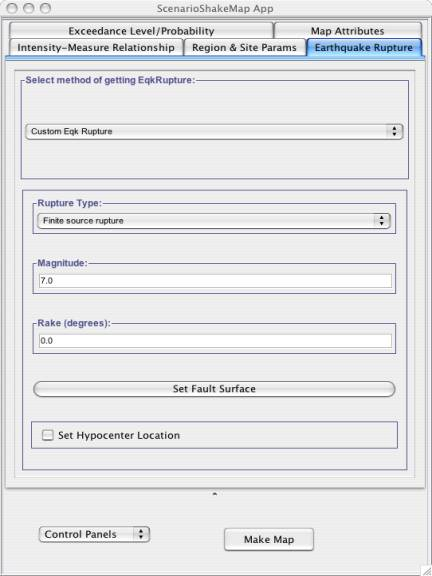
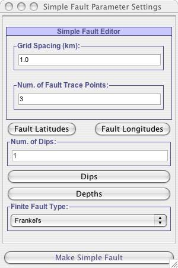
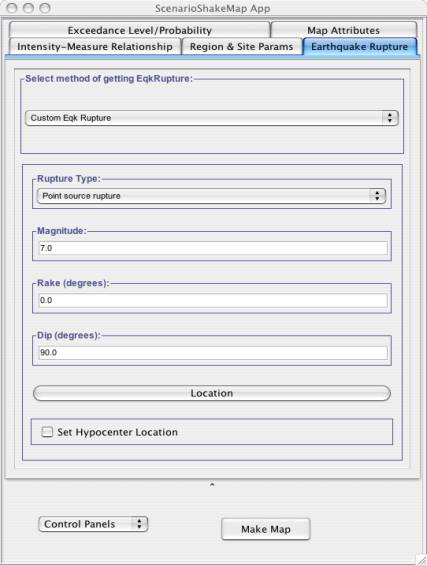
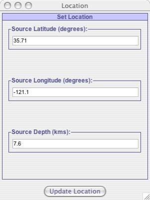

Defining Custom Earthquake Rupture
If user wants to define his own custom rupture, he/she can do so by selecting Custom Eqk Rupture from Select method of getting EqkRupture. Once user has done this he/she has the option of either working with Point Source Rupture or Finite Source Rupture.
Finite Source Rupture
As shown in Fig - 1, user can define his own Finite source rupture by setting the values for magnitude, rake and fault surface. When user clicks on Set Fault Surface , window pops up as shown in Fig 1(a 1(a), which allows user to define fault surface for the earthquake rupture. User can also set the Hypocenter location for the earthquake rupture by Checking the Set Hypocenter Location which allows user to select a hypocenter location.
Point Source Rupture
As shown in Fig - 2, user can define his own Point source rupture by setting the values for Magnitude, Rake, dip and Location of this rupture. When user clicks on Location button, a window will pop up, as shown in Fig – 2(a), which allows user to input the location for this point source rupture. Though it provides user with the option of setting the Hypocenter Location but it will be same as Point source rupture location.
|  |
| Fig - 1: Figures shows how user can define his own custom rupture. User can choose to create either a Point source rupture or Finite source rupture by making his selection from Rupture Type. |
|  |
|
Fig - 1(a): Figures shows how user can define the fault surface for the ERF. Clicking on the "Fault Latitudes", "Fault Longitudes" buttons will allow user to specify the locations of fault trace. Similarly, Dips and Depths will allow user to enter the dip and depths for the fault trace. Once user is done adjusting parameters to create a fault surface, he/she should click "Make Simple Fault" button which will set this fault surface for the ERF model.
|
|  |
| Fig - 2: Defining a point source rupture for Custom Eqk Rupture. Clicking on the "Location" button will allow the user to specify the lat,lon and depth for the point source rupture as shown in Fig - 2(a). |
|  |
|
Fig - 2(a): This window gets popped up when user clicks on the LocationButton in Fig -2. This window allows user to input the location for the Point source rupture.
|